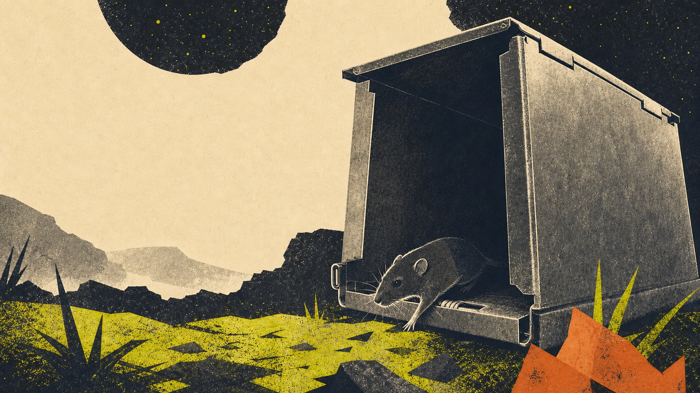

Skip to the poster
Desert Data Labs
Whole suite:
Driver Cascade
↗
NEON Small Mammal Tracker · unofficial
Who moves
after dark?
Meet the tiny lives reshaping the landscape.
Meet the mammals

Editorial illustration—not a field photograph or data record.